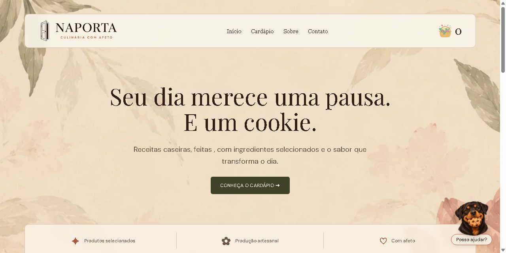
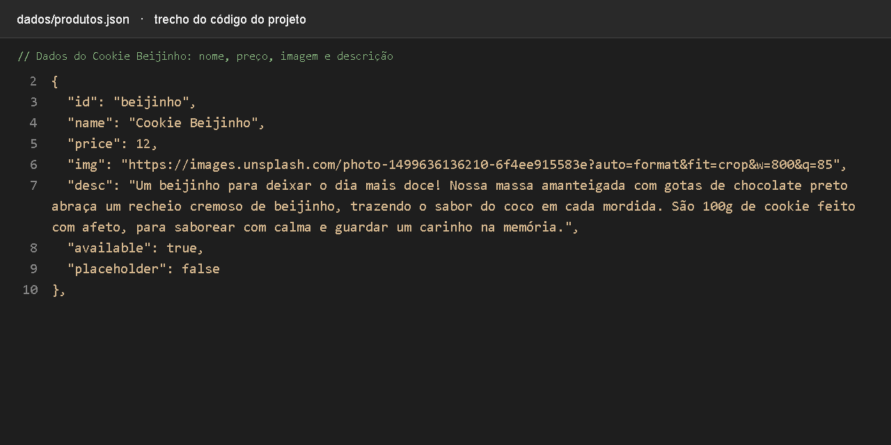
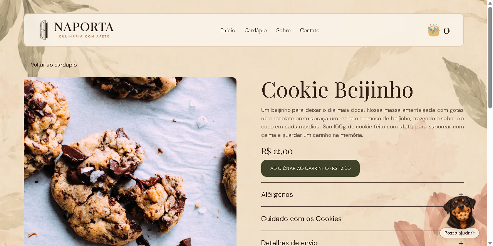
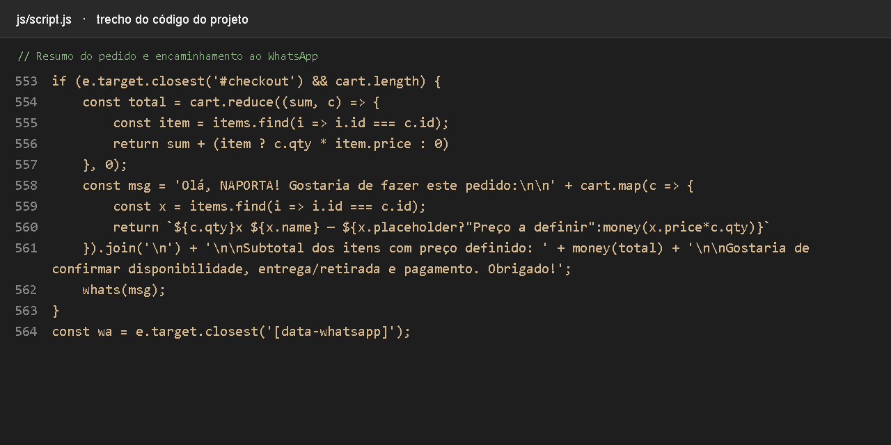
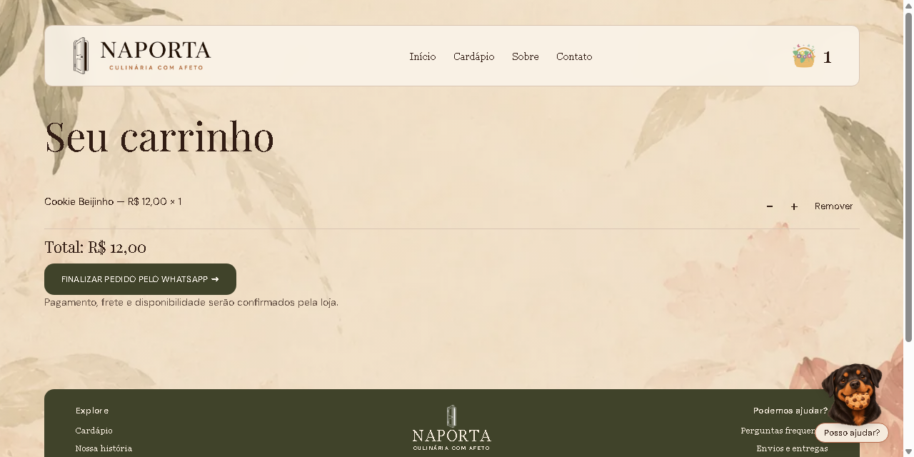
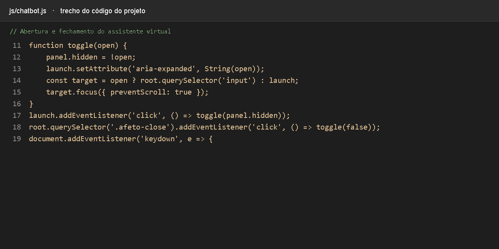
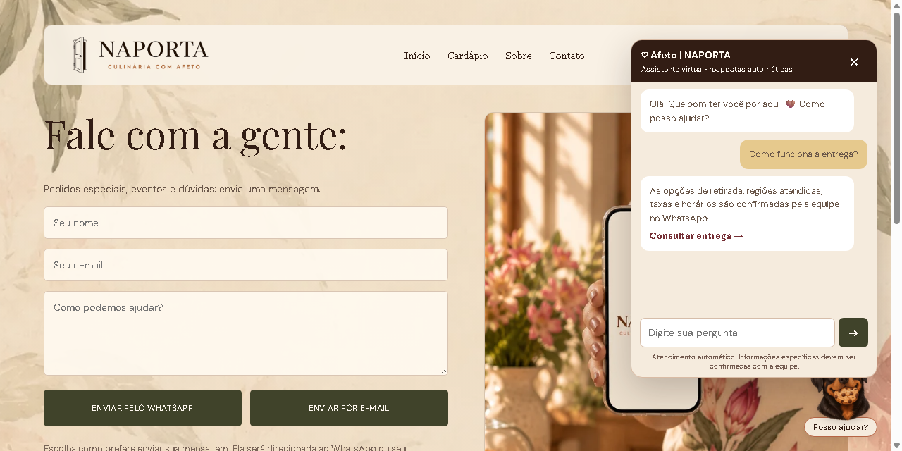

O CSS define o tamanho da fonte, o espaçamento e a largura do título. A classe hero-title-line coloca cada frase em uma linha, mantendo a apresentação organizada.

Resultado · Página inicial
A Home apresenta a marca e convida o visitante a conhecer o cardápio. O título aparece em duas linhas e o menu oferece acesso às principais páginas e ao carrinho.
NAPORTA · CULINÁRIA COM AFETO
Cadastro e detalhes dos cookies
Dos dados do produto à informação exibida para o cliente.

Código · Dados do produto
O arquivo JSON guarda o identificador, o nome, o preço, a imagem e a descrição de cada produto. O sistema consulta esses dados para preencher o cardápio e a página do cookie.

Resultado · Cookie Beijinho
A página mostra a foto, a descrição e o preço do cookie. O cliente pode consultar alérgenos, conservação e envio, além de adicionar o produto ao carrinho.
NAPORTA · CULINÁRIA COM AFETO
Carrinho e pedido pelo WhatsApp
Como o sistema organiza e encaminha a solicitação.

Código · Preparação do pedido
Ao clicar em finalizar, o código calcula o total e monta uma mensagem com produtos e quantidades. A função whats abre o WhatsApp com esse resumo preenchido.

Resultado · Conferência do carrinho
O cliente ajusta quantidades, remove itens e confere o total. O botão de finalização leva ao WhatsApp; o cliente envia a mensagem e combina disponibilidade, pagamento e entrega com a loja.
NAPORTA · CULINÁRIA COM AFETO
Atendimento virtual Afeto
Ajuda ao cliente durante a navegação.

Código · Controle da janela de atendimento
A função toggle mostra ou esconde o painel do assistente. Ela também atualiza o estado do botão e direciona o foco para a pergunta ou para o botão de abertura.

Resultado · Conversa com o assistente
Ao abrir o painel, o cliente pode digitar dúvidas e receber respostas automáticas sobre cardápio, entrega e pedidos. Os atalhos levam ao site ou ao WhatsApp para falar com a equipe.